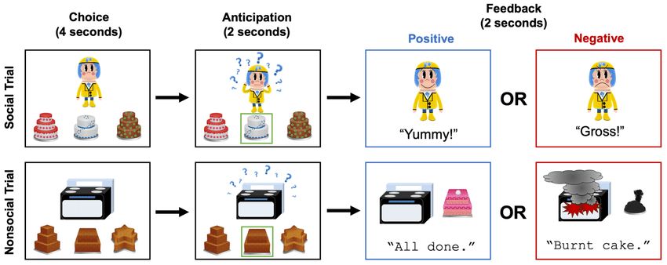

Incredible Cake Kids
We are building an app that streamlines an existing research process, known as Incredible Cake Kids, which creates an interactive user experience for children, while also allowing us to collect valuable data that can give insight into the child's risk of mental heath deterioration. Below is a step by step process on how it works.
1. Show user 3 different cakes and wait for their selection
2. If they make a selection:
- 2 second delay
- Show a response (positive or negative)
- Use our model to classify their reaction to the response
- Have a 2 second delay (trial rest)
- Self-rating selection (emojis)
3. If they make a selection:
- 2 second delay
- Show a response (positive or negative)
- Use our model to classify their reaction to the response
- Have a 2 second delay (trial rest)
- Self-rating selection (emojis)
4. If they don't make a selection within 7 seconds, re-prompt the user.
5. Incorporate a 20 second delay between each task.
6. Repeat the above 8-10 times.